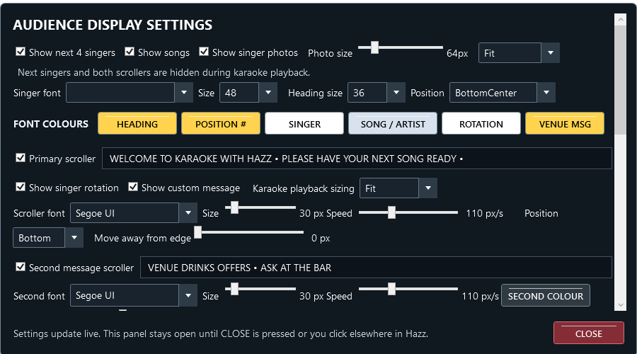
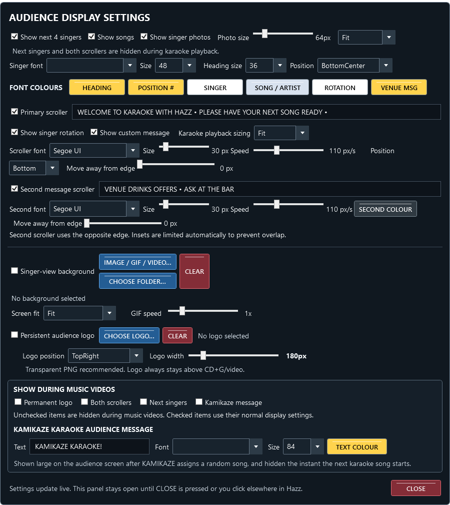

Download v1.8 PDF manual
Hazz Karaoke Hoster v1.72 display and sync guide
New in v1.72: Nine custom Sound FX pads across the top of the console. Choose your own files, names, colours, volume and sound output. Optional Kamikaze soundbite with music ducking. Read the Sound FX guide.
v1.71 stability update: Fixed the audience-preview rendering failure when switching skins. Confirmed by the affected user after testing. Run normally; the compatibility launcher is not required. All v1.7 features remain available. The v1.7 manuals below still apply.
Small-screen settings fix: Audience Settings now keeps readable text at 1366×768. Scroll to reach lower controls; CLOSE stays visible. Larger GUI text no longer shrinks the whole panel.
Made For KJ/DJ's By A KJ/DJ
Version 1.72 adds video AV Sync, a complete audience preview and optional transparent CD+G backgrounds. Existing playback, singer history, venue profiles, two scrollers and Fit/Stretch controls remain available. Transparency starts off.
Correct karaoke video timing with AV Sync
1. Load and play a karaoke video. Listen to the sound and watch the audience picture or preview.
2. Find CDG / VIDEO AV SYNC on the karaoke deck.
3. Press +0.25s when the picture or displayed lyrics are late. A positive value moves the picture ahead of the audio. For example, at audio time 10 seconds, +1 second shows video time 11 seconds.
4. Press −0.25s when the picture is early. A negative value delays the picture. At audio time 10 seconds, −1 second shows video time 9 seconds.
5. Use small steps until it looks right. The available range is −10 to +10 seconds. Sound continues normally; the control adjusts the picture.
6. Press SAVE to keep that track default. Press RESET for zero; press SAVE afterwards if you want zero to replace the saved default.
The same controls still adjust CD+G graphics. Video AV Sync works with Windows and VLC audience video, including pause, resume, seeking and the preview. Negative offsets hold the opening picture until audio reaches the required point; positions cannot run before the start or beyond the end of a video. This corrects a consistent offset, not a badly edited recording whose timing varies throughout the song. It does not adjust ordinary music-deck videos.
The track default is used when loading the file directly and is also saved to its library record when available. Existing queued singer/song sync preferences remain independent and take precedence when loading that singer's request. Adjust those in the singer's song/history window or while that singer's song is loaded. File-based defaults are matched by the original path, including the original ZIP path for zipped karaoke; moving or renaming a file changes that match. Saving does not rewrite the media file.
Preview the whole audience screen
1. Press SHOW PREVIEW above the singers list if the preview is hidden.
2. The panel now shows AUDIENCE PREVIEW. Between songs it includes your background, singer names and photos, logo, both enabled scrollers and any Kamikaze announcement.
3. Open DISPLAY > Audience Settings and change your messages or layout. The preview follows the actual audience scene, including the same scroller positions and slideshow item.
4. Start karaoke or a music video. The preview follows playback and the audience overlay visibility rules. During karaoke, singer lists and scrollers remain hidden as configured by Hazz's normal karaoke display behaviour.
5. Press HIDE PREVIEW to recover space and release its extra video decoder. Showing it again reconnects to the current scene.
The preview works without opening a TV window, using a 16:9 preparation scene until an audience window supplies its size. When the audience window is open, the preview fits its proportions. It never sends an audience window to another display by itself. Normal TV and display-selection buttons still control where the audience sees the show.
The preview's video decoder is muted, so it cannot add a second copy of the audio. Native video is mirrored using a separate muted decoder and can differ by a few frames; this is a monitoring preview, not a frame-accurate recording. Backgrounds, photos and text use the shared audience scene. A powerful video may need more resources with preview enabled, so hide the preview if your laptop is struggling.
Put your own background behind CD+G lyrics
1. Open DISPLAY > Audience Settings.
2. Enable Singer-view background. Choose an image, GIF or video, or choose a folder for the existing one-minute slideshow.
3. Enable Transparent CD+G background.
4. Leave Remove colour on Auto first. Hazz removes the colour identified by the CD+G memory-preset background instructions.
5. Play the CD+G song and check AUDIENCE PREVIEW. The chosen background now continues behind the remaining graphics during karaoke.
6. If Auto removes the wrong area, try Palette 0 through Palette 15 in Remove colour. These are the song's sixteen colour slots, not fixed names such as black or white. Choose the slot that removes the background while keeping the words readable.
7. Adjust Background opacity to dim your artwork towards black. Adjust Lyrics opacity separately; 100% keeps the remaining CD+G graphics fully visible.
8. Use the existing background Screen fit and GIF speed controls as needed. Karaoke Fit/Stretch still controls the CD+G picture itself.
CD+G is a coloured pixel image, not a separate lyrics layer. Any artwork or lyric pixels using the selected colour can also disappear. Lyrics opacity affects all remaining CD+G graphics, including title cards and drawings. Check each song and keep the background calm enough for the words to stay readable. This feature does not remove backgrounds from MP4 or other ordinary karaoke videos.
Keep a CD+G adjustment for one song
1. Load the CD+G song and adjust transparency, colour slot and both opacity sliders.
2. Press SAVE FOR THIS SONG. Hazz stores that combination against the original song path. It works for a CDG/audio pair or a karaoke ZIP, without modifying either file.
3. Load the song again to recall the saved combination. The controls show the recalled settings.
4. Press USE DEFAULTS to remove that song's override and return to the general CD+G display defaults.
5. Press RESTORE ORIGINAL for an immediate opaque, full-opacity CD+G picture. If the song already has a saved override, press SAVE FOR THIS SONG afterwards to keep the restored appearance for future loads.
When no song override is active, changing these controls changes the general default. When an override is active, changes are temporary until SAVE FOR THIS SONG is pressed. Close Hazz normally to keep general settings. Venue profiles save the display settings under the existing venue save rules; an older profile without these options uses transparency off. Read the status line after saving: if storage is unavailable, Hazz leaves the show running and asks you to retry.
Downloads and testing
The normal Windows folder ZIP and optional Single EXE ZIP contain the same features. Close your old Hazz, extract the new download and launch it. Keep every runtime folder with the normal ZIP. Both versions use your existing Hazz data location. The single EXE extracts its bundled runtime automatically. No separate VLC installation is required.
For Visual Studio 2026, install the .NET desktop development workload and .NET 10, open HazzKaraokeHoster.sln and build Release / x64. The normal package is produced in RELEASE/HazzKaraokeHoster, and the optional executable in RELEASE/SingleFile.
Validation covers compilation, CD+G alpha/keying and seek reset, saved-setting preservation, preview-only composition, four-skin layouts, Windows/VLC AV Sync, pause, seek, preview muting and fallback. Please rehearse on your own laptop, audience display and sound devices before using the update at a live show; a multi-hour hardware show test is not part of these automated checks.
Copyright © 2026 Hazz Karaoke. All rights reserved in the original Hazz Karaoke Hoster code, documentation, branding and artwork. Third-party components remain subject to their respective licences.

Retained features
Hazz Karaoke Hoster v1.6 audience display guide
Version 1.6 adds Fit or Stretch for karaoke playback, separate rotation and message switches, and a second independent scrolling message. The existing Fit display and combined primary scroller remain the defaults. The second scroller starts switched off.
Fill the audience screen with karaoke
1. Open DISPLAY, then Audience Settings — Backgrounds, Logo, Scroller.
2. Find Karaoke playback sizing beside the scroller switches.
3. Choose Fit to show the entire picture in its original proportions. A square or 4:3 song on a widescreen TV will have side borders.
4. Choose Stretch to fill the audience display. This changes the picture proportions, so faces and lettering may look wider or taller.
5. Play a CD+G or karaoke video and check the TV. The setting applies to both Windows and VLC karaoke video engines, including Windows fallback. It can also be changed during playback.
This setting affects the audience karaoke picture, not ordinary music videos or idle artwork; the audience preview now mirrors this sizing. The existing Screen fit control under Singer-view background still controls images, GIFs and background videos. Black borders recorded inside a video remain part of that video; Stretch cannot remove them independently. Crisp or smooth CD+G remains available.
Show a message without revealing the singer order
1. Open DISPLAY > Audience Settings.
2. Leave Primary scroller switched on.
3. Switch off Show singer rotation.
4. Leave Show custom message switched on and type your announcement into the message box beside Primary scroller.
5. If you also want to hide the separate upcoming-singers panel, switch off Show next 4 singers at the top of this panel.
Only the announcement now scrolls. You can rearrange the singers privately. To show the order again, enable Show singer rotation. Both content switches can be on together; rotation comes first and the message follows. Turning Primary scroller off hides the entire first bar. Turning both content switches off also hides it. An empty message adds no text. When rotation is enabled but there are no singers, the bar says Singer rotation empty.
Add a second scrolling message
1. Switch on Second message scroller.
2. Enter the second message in its box, for example DRINKS OFFERS — ASK AT THE BAR. A blank message keeps this bar hidden.
3. Choose Second font. Drag its Size slider to choose 16–120 pixels; the number beside it shows the selected size.
4. Drag the second Speed slider to choose how fast that message moves. This does not change the primary scroller speed.
5. Press SECOND COLOUR to choose this message's colour.
6. Use the second Move away from edge slider if the TV cuts off the edge of the message.
The second message works even when Primary scroller is off. Each bar has its own font, size, speed and inset. Primary rotation and message colours still use the ROTATION and VENUE MSG buttons. Existing primary text outline settings continue to apply.
Keep the two bars apart
1. Use Position in the primary scroller controls to choose Top or Bottom.
2. The second bar automatically uses the opposite edge. Primary Bottom means second Top; primary Top means second Bottom. This also determines the second bar's edge when the primary is off.
3. Try the edge-inset sliders while looking at the audience TV. A larger number moves that bar inward.
Hazz limits the effective inset so each bar stays in its own half of the audience screen. The requested slider value is retained, but may be reduced on a short display or with large fonts to keep the bars apart. Extremely short windows can clip large text; enlarge the audience window or reduce its font size. The upcoming-singers panel keeps clearance from visible bars.
What happens during songs and when saving
Both scrollers and the upcoming-singers panel hide during karaoke playback and the Kamikaze announcement, as the original scroller did. They return afterwards. To show enabled scrollers over ordinary music videos, tick Both scrollers under SHOW DURING MUSIC VIDEOS. Leave it off for an unobstructed music video. Permanent logo behaviour is unchanged.
Settings apply live. Press CLOSE to dismiss the panel. Close Hazz normally to retain your display choices; do not end it using Task Manager. When using venue profiles, save or update that profile to keep these choices with the venue, following the existing venue save rules. An older profile without the new fields uses Fit, enables both primary content switches, and leaves the second bar off. Existing singers, favourites and playlists are not changed by these options.
Update or build v1.6
Download the normal Windows ZIP and extract the entire folder, or choose the optional Single EXE ZIP. Close the old Hazz before launching the new copy. Both use your existing Hazz data location. Keep all runtime folders with the normal download. The single EXE extracts its bundled runtime automatically. No separate VLC installation is needed.
To build yourself, install Visual Studio 2026 with .NET desktop development and .NET 10, open HazzKaraokeHoster.sln, select Release / x64 and build. The normal app is in RELEASE/HazzKaraokeHoster and the optional single executable is in RELEASE/SingleFile.
Copyright © 2026 Hazz Karaoke. All rights reserved in the original Hazz Karaoke Hoster code, documentation, branding and artwork. Third-party components remain subject to their respective licences.

Retained features
Hazz Karaoke Hoster v1.5
Version 1.5 adds a folder-only Kamikaze pool and drag-edge scrolling, and brings the newer playback, search, layout and data-protection fixes into the main release. Your existing singers, favourites, venue settings and music handover choices are retained.
Choose the songs used by Kamikaze
1. Put the songs you want into one folder. For a five-song game, put those five songs directly in the folder.
2. In Hazz, open SHOW, then Kamikaze song source, then Choose folder only.
3. Select that folder. Hover over the menu choice or KAMIKAZE button to see its saved path.
4. Add singers normally. Press KAMIKAZE to choose for the next singer, or right-click a singer and choose KAMIKAZE FOR THIS SINGER.
5. Hazz picks one supported song at random from that folder. Press KAMIKAZE again to change the selection; it avoids the previous choice when another song is available. This is not a shuffle-bag: earlier songs may return on later picks.
6. Press karaoke PLAY when ready. The existing announcement, loading and music handover behaviour still applies.
7. To return to the usual pool, choose SHOW > Kamikaze song source > Entire karaoke library (default).
Only files directly in the chosen folder are used. Subfolders are excluded. A matching CDG and audio file count as one song. ZIP karaoke, supported video and audio files are accepted; an orphan CDG, unsupported file or unreadable ZIP is skipped. Use karaoke content in this folder: Hazz cannot determine whether a video or audio recording contains vocals. A single-song folder always selects its one song, even on repeat presses.
The folder choice is saved across restarts. No bulk import is needed: the selected song is added to the library if it is not already indexed, so ordinary singer history still works. If the folder is empty or unavailable, Hazz reports it and does not choose from the full library. Reconnect the drive or choose another folder. A supported file can still fail playback if its media content or codec is damaged; test the pool before the show.
Drag through a long list
1. Start dragging a song or singer normally and keep the mouse button held.
2. Hold the pointer near the top of the destination list to scroll up, or near the bottom to scroll down.
3. Keep holding to continue through the list. Move into the middle to stop scrolling.
4. Release over the required position to drop. Escape cancels the drag.
This works with both music decks, the side list, singer rotation, a singer's queued songs and the virtual-folder tree. Existing move/copy rules stay the same. It scrolls existing rows; it does not turn the library browser's separate search pages.
Choose a console skin and working mode
Open DISPLAY > Console Skin and choose Classic, Midnight, Copper or Daylight. Classic keeps the original layout. Midnight stacks music decks beside karaoke; Copper places playlists above controls; Daylight provides a light background and a different arrangement. The same controls are used in every skin.
Under SHOW, Karaoke Only hides music decks, Single Deck uses Deck 2 as a side list, and Karaoke Focus puts singers in the area normally used by Deck 2 and enlarges the karaoke preview. Focus uses Deck 1 for music. Leaving Focus keeps Single Deck enabled until you turn that option off. Your skin choice also affects where these panels sit. Host text size and automatic fitting remain available.
Seek karaoke and correct CDG sync
Drag the karaoke progress slider to choose a position, or use the minus/plus five-second buttons. CDG graphics rebuild for the selected position. Pause remains pause; seeking does not replace the loaded song.
For CDG sync, positive values advance the graphics and negative values delay them. Use the 0.25-second buttons and RESET to return to zero. For example, plus 1 second displays the graphics for second 11 when the audio is at second 10. Check any saved adjustments made while using earlier test versions with reversed sync behaviour; saved numbers are not automatically changed.
Track lengths and remaining show time
Karaoke search shows known track lengths and reads up to 80 uncached results in the background. Unknown lengths may remain blank. Repeat searches can use the saved length. REMAINING above the singer list adds queued requests and the current karaoke song's remaining time. Held singers are excluded. An unknown length uses a four-minute estimate and a tilde marks an estimate. This is a guide, not a guaranteed finish time; tempo changes, introductions and breaks can change the real duration.
Search cleanup and singer history export
Search accepts apostrophes and other punctuation. Right-click a result to mark it as a favourite or remove its database entry. Remove missing results affects the current displayed results only. Database removal does not delete the media file or the singer's history. Existing yellow favourite stars remain available.
To export history, open a singer's songs/history window, type a filter if wanted, then press EXPORT CSV. Choose where to save it. The file contains the displayed history, including singer, song, artist, date, count, key, sync and file path.
Choose the download format
The normal Windows ZIP contains the app and its runtime folders. Extract it and keep the whole folder together. The optional Single EXE ZIP contains one app EXE plus instructions; it automatically extracts its bundled runtime when launched. Both formats use the same existing Hazz data location and do not create separate singer libraries. No separate VLC installation is required.
For Visual Studio 2026, install the .NET desktop workload and .NET 10 SDK, open the solution and build Release. RELEASE/HazzKaraokeHoster contains the normal app; RELEASE/SingleFile contains the optional EXE. BUILD-EXE.cmd and BUILD-SINGLE-EXE.cmd build each format separately.
Saved data and reliability fixes
Skin selection saves independently of audience controls. Settings retain unknown options and recovery copies; failed reads cannot overwrite them with defaults. Startup guards protect queues and venue snapshots before recovery succeeds. Newer fixes also cover Karaoke Focus music return, scrolling deck LEDs, stale search refreshes, right-click selection, ZPB catalogue names and crossfade preferences when entering Focus.
Compilation, temporary-data regression tests and layout checks pass. Actual sound devices, external TVs and multi-hour playback depend on your hardware and still require a rehearsal before a live show. Doctor integration remains a separate development project.
Copyright © 2026 Hazz Karaoke. All rights reserved in the original Hazz Karaoke Hoster code, documentation, branding and artwork. Third-party components remain subject to their respective licences.
Earlier features retained
Hazz Karaoke Hoster v1.4 — new features and instructions
Version 1.4 adds music handover choices, real deck waveforms, venue singer photos and favourites in search. Doctor integration remains separate.
Build with Visual Studio 2026
- Extract the entire ZIP to a new folder.
- Install the .NET desktop development workload and .NET 10 SDK.
- Open HazzKaraokeHoster.sln, allow NuGet restore, select Release / x64.
- Choose Build > Rebuild Solution. Keep the Release project enabled.
- Use RELEASE/HazzKaraokeHoster/Hazz Karaoke Hoster.exe. Keep all accompanying DLLs and the libvlc folder.
BUILD-EXE.cmd is the alternative publish command.
Choose what music does when karaoke starts
- Open SHOW > Music when karaoke starts.
- Choose one:
- Fade and stop — next queued track (default): existing behaviour; the interrupted music is consumed and queued music returns.
- Fade then pause — resume same track: music fades using the crossfade duration, pauses at that point, then fades back from that position.
- Fade then keep playing silently: the music continues advancing at zero volume. When karaoke ends, it fades back at its current position.
- Start a music track on Deck 1 or Deck 2, then press karaoke PLAY.
- Use karaoke STOP or PLAY MUSIC to return. The existing karaoke STOP return fade is 1.5 seconds.
The choice is saved. Changing it during a karaoke song applies to the next handover.
If a silent track ends, Hazz waits for karaoke to finish then uses queued music; it does not loop or start another track silently.
During a crossfade, the incoming deck is retained and the outgoing track is finished.
This option applies to the regular music decks. Space-bar search preview keeps its existing stop behaviour.
Load/play music on either deck. An overview is generated in the background.
Click the waveform to seek. Unsupported files show a message; the position slider remains available.
Singer photos
Right-click a singer in the main list and choose CHOOSE SINGER PHOTO.
The webcam action opens Windows Camera; take/save the picture and select it afterwards.
Photos are stored by singer name and active venue; no venue uses the default collection.
In DISPLAY > audience settings, enable Show singer photos and adjust Photo size and Fit, Fill/crop, Stretch or Center.
Photos appear in the main singer list and beside the upcoming singers on the TV. The upcoming list follows existing hide-during-karaoke behaviour.
Search favourites
Right-click a search result to mark/unmark it as a favourite. Music search supports multiple selected rows.
Saved favourites have a yellow star in search results.
Testing
The exact packaged source passed Release compilation with zero warnings/errors.
Automated handover logic checks passed for pause, mute, default, early return, ended-track fallback, crossfade and setting changes.
These checks use simulated music devices. Test pause/resume and silent playback with your actual sound devices before a live show.
Copyright © 2026 Hazz Karaoke. All rights reserved in the original Hazz Karaoke Hoster code, documentation, branding and artwork. Third-party components remain subject to their respective licences.
Copyright © 2026 Hazz Karaoke. All rights reserved in the original Hazz Karaoke Hoster code, documentation, branding and artwork. Third-party components remain subject to their respective licences.
Version 1.4. This guide explains how to set up a show, use each main feature and keep your singers and music organised. Follow the numbered steps in the section you need. Buttons are written as they appear in the app. The console illustration below is rendered from v1.4; DISPLAY menu options are described in the relevant sections.
This is a render of the v1.4 console layout with empty lists, made from the interface source. It includes SOUND DEVICES, NORMALIZE AUDIO, MUSIC VIDEO, TEMPO, CLEAR PLAYLIST and next-track status. Live data is not loaded in this layout view. Dialog instructions below describe their actual controls; this image is not a picture of those dialogs.
The left and right columns are music players. The centre contains the karaoke player, singer rotation and private preview. The top search buttons choose which library you search. Green buttons start playback, red buttons stop or remove, yellow buttons pause or adjust, blue buttons load or navigate, and teal buttons add or save. Active buttons become brighter.
Imported folders are watched for new files while Hazz is running. Choose LIBRARY > Rescan Watched Folders after adding files while the app was closed or if changes were missed. Supported playback depends on Windows codecs as well as the file extension. Common audio formats include MP3, WAV, WMA, M4A, AAC, FLAC and OGG; common video formats include MP4, MKV, AVI, MOV and WMV. Karaoke includes ZIP packages and CDG with matching audio.
Detection is not a guarantee that every version of every program is supported. Hazz handles recognised databases, readable exports and playlist formats. If a proprietary file cannot be understood, keep the original and use an export format supported by the preview.
Readable GRP and PLG groups become folders. If several group files have the same filename, the newest modified copy is used; if dates tie, the larger copy wins. Unchanged groups are skipped on repeat imports. Files with no recoverable media paths are reported instead of creating invented links.
Recognised history formats include CSV, TSV, JSON, XML and supported SQLite or Access-based databases. Matching tracks link to the Hazz library; unmatched performances can remain as history. Keep a backup before reimporting, because repeated imports may replace earlier rows from that source.
VLC is used only for the audience karaoke and music-video picture. Audio routing,
pitch control and the private preview keep their existing playback engines.
Audience video stays muted to avoid duplicate sound. If VLC cannot open a video,
Hazz attempts Windows playback and records the fallback in the Logs folder.
Fullscreen placement and the existing audience overlay choices still apply.
Background slideshow videos retain their existing muted looping playback.
The VLC runtime is included in the download. Extract and keep the whole folder,
including libvlc and the DLLs; copying only the EXE will not include VLC support.
Hazz remembers this choice when you close and reopen it. Venue profiles also
include the setting, so loading a saved venue can restore that venue's text size.
This changes the main console, including its search results, both playlists,
side list, singer list, buttons and menus. Separate browser/dialog windows keep
their existing text sizes. It does not change the text shown to the audience;
adjust that separately in DISPLAY > Audience Settings. Larger text leaves
room for fewer rows. You can hide the karaoke preview to give singers more room.
If a saved device is missing, Hazz reports it rather than silently routing to another output. Reconnect it or select an available output. Device names can change when hardware or drivers change.
This levels audio during playback; it does not rewrite files. It uses RMS levelling, not whole-file LUFS measurement. The per-player peak limiter does not guarantee that several mixed outputs cannot overload an external mixer. Microphone levels are controlled by your microphone/mixer equipment. Some karaoke audio paths require reloading before processing is available.
History is recorded when a performance starts. Stopping early does not make it an unplayed song. Without a venue profile, names and history still save in the main database for future sessions.
Manual is the default. An explicit saved opt-in is remembered and may also be restored by a venue's settings. A turn counts when PLAY starts the singer request; pause/resume does not add another. Interrupted turns still count. Imported lifetime history is not the current show's turn count.
Held singers and singers without songs remain behind ready singers. The current performer keeps their slot. Rounds advance rather than waiting indefinitely for held/unready people. New Show resets turn/group records; show recovery preserves them. Loading a venue singer list starts fresh turn counts.
Virtual folders are named collections of links. They do not move or duplicate your media files.
Venue settings and singer lists use separate controls. APPLY changes display/audio/layout settings. LOAD SINGER LIST replaces the current saved names, history and singer queue. The music library remains shared.
If you use KEEP SELECTED while the old venue remains active, that reduced list will be saved back to the old venue on the next save/change/close. Disconnect first when you want the old list preserved.
Back up venue-profiles.json together with the entire venue-singers folder beside the database. Artwork is linked by path, not copied into a profile. Singer safety backups and manual snapshot revisions are retained; inspect their size occasionally. Settings edits do not automatically update the named profile: use SAVE CURRENT. A failed final venue save leaves Hazz open to retry.
Ready means the file opened, not that every part of it has been checked. A drive/device failure or corruption later in a track can still interrupt playback.
Compression needs temporary space for an uncompressed snapshot and the new ZIP. Hazz validates the new archive before retiring older generated ZIPs. There is no full-database restore wizard; the singer-backup restore is a separate feature.
Recovery checkpoints run about every 15 seconds. These working recovery writes are separate from venue snapshots; there is no timed venue save. Hazz reduces repeated display updates when minimised while music automation, fades and audience synchronisation continue. This is not a guarantee against every crash or hardware failure.